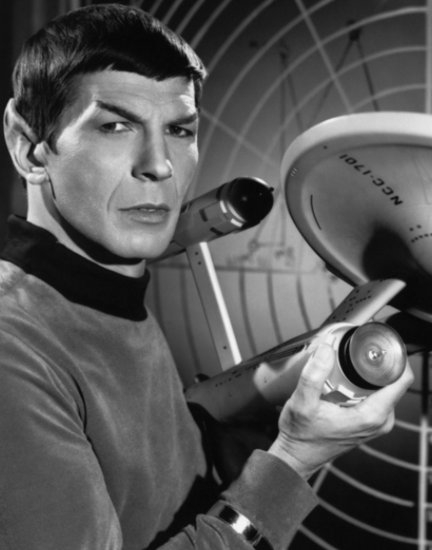
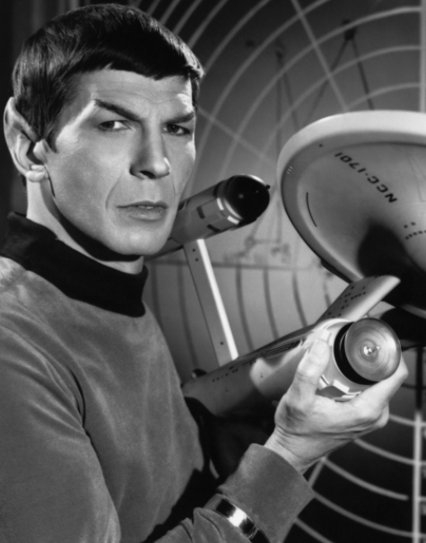

Leonard Nimoy
as Spock

1931 - 2015
Leonard Nimoy was an actor, author, director, singer and photographer. His most well known role was that of Spock in the Star Trek franchise. The character is a half-vulcan half-human star fleet officer. Together with James Kirk and the crew of the USS Enterprise , they explore the far reaches of space. Leonard portrayed Spock from 1964, in Star Trek: The Original Series to 2013 in the recent reboot film, Star Trek Into Darkness.
Gallery

 

Timeline
- 1931 Born in Boston, MA.
- 1951 First acting role in Queen for a Day.
- 1964 Filmed the pilot for Star Trek.
- 1966 Starred in Star Trek: The Original Series.
- 1979 Starred in the first of 8 Star Trek films.
- 2015 Passed away in Los Angeles, CA.